EASYBUS PRO
(Bus Ticket Booking System using Python, Flask and SQLite3)
Summer Internship Report Submitted in partial fulfilment
of the requirement for undergraduate degree of
Bachelor of Technology
In
COMPUTER SCIENCE AND ENGINEERING
By
S. SOWMYA
2023003449
Under the Guidance of
<< GUIDE NAME >>
Assistant Professor
<< Insert University Logo Here >>
Department Of Computer Science and Engineering
GITAM School of Technology
GITAM (Deemed to be University)
Hyderabad-502329
July 2026
I submit this industrial training work entitled “EasyBus Pro – Bus Ticket Booking System using Python, Flask and SQLite3” to GITAM (Deemed To Be University), Hyderabad in partial fulfilment of the requirements for the award of the degree of “Bachelor of Technology” in “Computer Science and Engineering”. I declare that it was carried out independently by me under the guidance of << Guide Name >>, Asst. Professor, GITAM (Deemed To Be University), Hyderabad, India.
I further declare that the analysis, database design, source code, screenshots and test results presented in this report are the outcome of the work performed by me during the internship period, and that all material drawn from books, official documentation and websites has been acknowledged in the References section. The limitations of the present version of the system have been reported honestly instead of being concealed.
The results embodied in this report have not been submitted to any other University or Institute for the award of any degree or diploma.
| Place: HYDERABAD Date: 25-07-2026 |
Name: S. SOWMYA Student Roll No: 2023003449 |
GITAM (DEEMED TO BE UNIVERSITY)
Hyderabad-502329, India
Dated: 25-07-2026
This is to certify that the Industrial Training Report entitled “EasyBus Pro – Bus Ticket Booking System using Python, Flask and SQLite3” is being submitted by S. SOWMYA (2023003449) in partial fulfilment of the requirement for the award of Bachelor of Technology in Computer Science and Engineering at GITAM (Deemed to Be University), Hyderabad during the academic year 2025 - 2026.
It is a faithful record of the work carried out by her at DayLearner Private Limited, Kakinada, during a two-month industrial training programme from 25 May 2026 to 25 July 2026, under the guidance and supervision named below.
| << Guide Name >> Assistant Professor Department of CSE |
<< HOD Name >> Professor and HOD Department of CSE |
The certificate below was issued by DayLearner Private Limited, Kakinada, on completion of the two-month industrial training programme in Python Full Stack Web Development with Artificial Intelligence and Prompt Engineering, during which the EasyBus Pro project described in this report was developed.
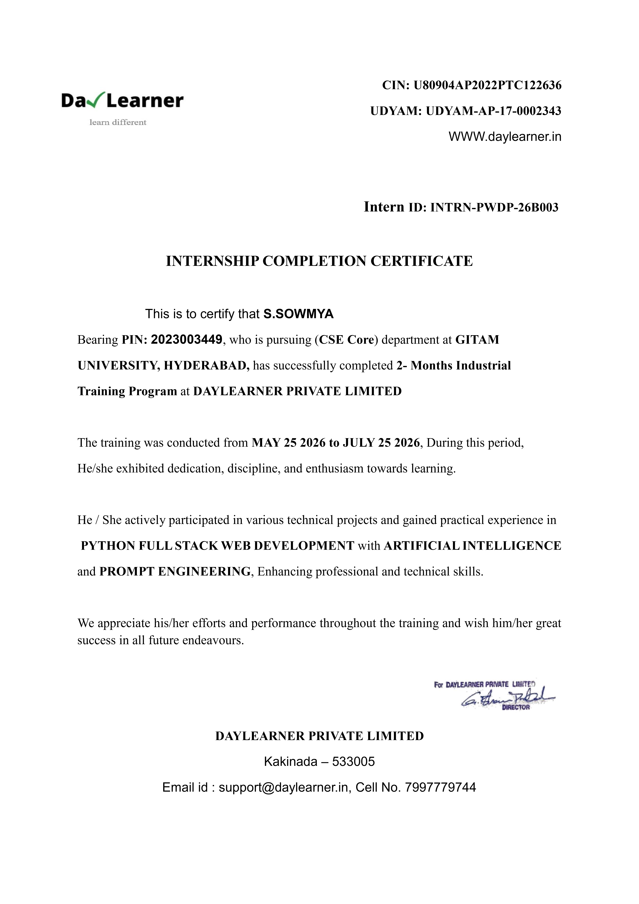
Figure A: Internship Completion Certificate – DayLearner Private Limited
Apart from my effort, the success of this internship largely depends on the encouragement and guidance of many others. I take this opportunity to express my gratitude to the people who have helped me in the successful completion of this internship.
I would like to thank DayLearner Private Limited for accepting my application and for giving me the opportunity to work in a professional development environment. I am especially grateful to my mentor, << Mentor Name >>, who reviewed my code every week, pointed out mistakes without discouraging me, and insisted that I should understand why something works rather than merely make it work. The habit of reading an error message carefully before changing a single line of code came directly from those review sessions.
I would like to thank respected Dr. D. Sambasiva Rao, Pro Vice Chancellor, GITAM Hyderabad and Dr. N. Seetharamaiah, Principal, GITAM Hyderabad.
I would like to thank respected << HOD Name >>, Head of the Department of Computer Science and Engineering, for giving me such a wonderful opportunity to expand my knowledge in my own branch and for the guidelines given to present this internship report. It helped me a lot to realise the purpose of what we study.
I would like to thank the respected faculty << Guide Name >>, who supervised this work academically and whose suggestions on documentation, diagram preparation and test case design have shaped the structure of this report.
On a personal note, I owe more than I can express to my parents, for their constant encouragement and for their patience on the many evenings when the work continued well beyond normal hours. Finally, I would also like to thank my friends, who tested the application on their own laptops, reported the errors they encountered and suggested changes to the user interface, and who helped me to make my work more organized and well-stacked till the end.
Any shortcomings that remain in this work are entirely my own.
S. SOWMYA
2023003449
Intercity bus ticketing for small and medium operators is still largely handled at counters and over the telephone, where a passenger cannot compare operators, cannot see the seat layout before choosing a seat and receives only a paper slip as proof of booking. This internship addresses that problem through the design and development of a web-based bus ticket reservation system named EasyBus Pro, built using the Flask micro web framework on Python 3 with SQLite3 as the database engine, HTML5 and CSS3 for the interface, the Jinja2 templating engine for server-side page generation and a small amount of JavaScript for interactive seat selection.
The application allows a traveller to register an account, log in, search for buses between two cities on a chosen date, compare the buses returned by the search with their timings, fares and seat availability, select seats from a visual coach layout, choose a payment method, receive a confirmed electronic ticket and view the complete history of bookings made from that account. An administrative facility is also provided through which new buses can be added to the system. The database consists of three tables — users, bus and bookings — in which the bookings table maintains references to the other two, so that every ticket can be traced back to the passenger who booked it and the bus on which the seat was reserved.
The technical learning obtained during the internship covers Flask routing and the request–response cycle, the correct use of the GET and POST methods, template inheritance using Jinja2 blocks, safe parameterised SQL queries, the four CRUD operations, the practical meaning of primary and foreign keys, signed cookie-based session management and systematic debugging using the Werkzeug interactive debugger. The report also records the difficulties actually encountered during development — template-not-found errors, an OperationalError caused by a missing table, duplicated seed data, a re-submission problem on the confirmation page and a reserved-keyword conflict in a URL parameter named from — together with the way each was diagnosed and resolved.
The outcome of the internship is a working application that completes the entire booking cycle with data stored permanently in a relational database, supported by system architecture, ER and UML diagrams, a documented database schema and a set of executed test cases. The known limitations of the present version, principally plain-text password storage and the absence of a real payment gateway, are stated openly, and a realistic set of future enhancements is proposed in the concluding chapter.
| DECLARATION | ii |
| CERTIFICATE | iii |
| ACKNOWLEDGEMENT | iv |
| ABSTRACT | v |
| CHAPTER 1: INTRODUCTION | 1 |
| 1.1 OVERVIEW OF THE INTERNSHIP | 1 |
| 1.2 OBJECTIVES OF THE INTERNSHIP | 2 |
| 1.3 PURPOSE AND SCOPE OF THE WORK | 2 |
| 1.4 IMPORTANCE OF THE INTERNSHIP | 3 |
| 1.5 EXPECTED OUTCOMES | 3 |
| 1.6 INTERNSHIP SCHEDULE | 4 |
| CHAPTER 2: ORGANIZATION PROFILE | 5 |
| 2.1 COMPANY OVERVIEW | 5 |
| 2.2 MISSION AND VISION | 5 |
| 2.3 SERVICES OFFERED | 6 |
| 2.4 TECHNOLOGIES USED IN THE ORGANIZATION | 6 |
| 2.5 DEPARTMENTS | 7 |
| 2.6 SOFTWARE DEVELOPMENT PROCESS FOLLOWED | 7 |
| 2.7 FUTURE SCOPE OF THE ORGANIZATION | 8 |
| CHAPTER 3: TECHNOLOGY OVERVIEW | 9 |
| 3.1 PYTHON | 9 |
| 3.2 FLASK WEB FRAMEWORK | 10 |
| 3.3 JINJA2 TEMPLATE ENGINE | 12 |
| 3.4 SQLITE3 DATABASE | 13 |
| 3.5 HTML5, CSS3 AND JAVASCRIPT | 14 |
| 3.6 VISUAL STUDIO CODE AND SUPPORTING TOOLS | 15 |
| 3.7 JUSTIFICATION OF THE TECHNOLOGY STACK | 15 |
| CHAPTER 4: PROJECT – EASYBUS PRO | 16 |
| 4.1 PROJECT OVERVIEW | 16 |
| 4.2 EXISTING SYSTEM AND ITS LIMITATIONS | 17 |
| 4.3 PROPOSED SYSTEM AND ITS ADVANTAGES | 18 |
| 4.4 SYSTEM REQUIREMENTS | 19 |
| 4.5 MODULES OF THE SYSTEM | 21 |
| 4.6 SYSTEM ARCHITECTURE | 30 |
| 4.7 DATABASE DESIGN AND SCHEMA | 32 |
| 4.8 PROJECT WORKFLOW | 35 |
| 4.9 UML DIAGRAMS | 36 |
| 4.10 CHALLENGES FACED AND SOLUTIONS | 40 |
| 4.11 TESTING | 42 |
| 4.12 LIMITATIONS OF THE PRESENT VERSION | 45 |
| CHAPTER 5: LEARNING OUTCOMES | 46 |
| 5.1 TECHNICAL SKILLS ACQUIRED | 46 |
| 5.2 PROBLEM SOLVING AND DEBUGGING | 47 |
| 5.3 DATABASE AND FLASK DEVELOPMENT SKILLS | 47 |
| 5.4 USER INTERFACE DESIGN AND PROJECT ORGANIZATION | 48 |
| 5.5 PROFESSIONAL SKILLS | 48 |
| CONCLUSION | 49 |
| FUTURE ENHANCEMENTS | 50 |
| REFERENCES | 51 |
The B.Tech curriculum requires every student to complete an industrial internship before the final year project. The reason for this requirement becomes clear only when it is experienced. A student who has written laboratory programs has never had to make software work for someone other than himself. A laboratory program is graded on whether the expected output appears on the console; real software is judged on whether a person who did not write it can use it without confusion, whether it stores data correctly, whether it behaves reasonably when the user does something unexpected, and whether another developer can read the code six months later. This internship was my first opportunity to work under those conditions.
The internship was carried out at DayLearner Private Limited over a period of eight weeks (two months) in the domain of web application development. At the beginning I was told that I would not be given a step-by-step procedure to follow. Instead I was given a problem statement — build a working online bus ticket booking system — and a technology stack, and I was expected to analyse the problem, design the database, write the code, test it and demonstrate the result at the end of every week. My mentor reviewed the work weekly, pointed out what was wrong and let me correct it myself. This method was slower than being given the answer, but it is the reason I can now explain every line of the application that was built.
The application developed during the internship is called EasyBus Pro. It is a web-based bus ticket reservation system in which a traveller creates an account, logs in, searches for buses running between two cities on a chosen date, examines the buses returned along with their timings, fares and seat availability, selects the required number of seats from a visual coach layout, chooses a payment method, receives a confirmed electronic ticket and can later view every ticket booked from that account. An administrative facility for adding new buses was also implemented so that bus data could be maintained without editing the database file by hand.
The technology stack was fixed at the start: Python 3 as the language, Flask as the web framework, SQLite3 as the database engine, HTML5 and CSS3 for the interface, Jinja2 for server-side templating and a small amount of JavaScript for the interactive parts of the interface. All development was carried out in Visual Studio Code on a Windows system. The reasons behind this choice are discussed in Chapter 3.
Working on the server side of a web application introduced four problems that a console program never presents. The first is statelessness: HTTP remembers nothing between two requests, so when a user logs in on one page and moves to another, the server has no inherent knowledge that the two requests came from the same person. The second is the separation of presentation from logic: the Python code that queries the database and the HTML that displays the result must not be mixed, or the application becomes impossible to modify. The third is persistence: a booking made today must still exist next week, which requires a database and a schema designed in advance. The fourth is untrusted input: every value arriving from a browser may be empty, of the wrong type, or a deliberate attempt to break the SQL query. Working through all four in a single application is what made the internship valuable.
The objectives agreed with the mentor at the start of the internship were as follows.
A bus ticket booking system was chosen deliberately. The domain is familiar to everybody, so no time was lost in understanding what the software should do; at the same time the problem is not trivial, because it involves several related entities, a multi-step process in which information collected on one screen must be carried to the next, a state that must persist across pages, and a final transaction written permanently to a database. It therefore exercises almost every concept a beginner in web development needs to learn, without requiring domain expertise.
Included in the scope: registration with password confirmation and duplicate e-mail detection; login authentication and session creation; search for buses by source, destination, date and passenger count; display of matching buses with timings, fare and availability; interactive seat selection limited to the number of passengers; a payment screen offering UPI, card and net banking; permanent storage of the confirmed booking and generation of an on-screen e-ticket; a booking history page built with an SQL join; a profile page; About and Contact pages with a common navigation bar and footer; and an administrative page for inserting and listing bus records.
Excluded from the scope: integration with a real payment gateway, which requires a merchant account and cannot be tested in an academic setting; online cancellation and refunds; e-mail, SMS and OTP verification; real-time GPS tracking; and deployment on a public cloud server, since the application was executed on the local development server. These exclusions were discussed with the mentor and consciously accepted so that the features within scope could be completed properly rather than leaving a larger number of features half-finished. Most of them reappear in the Future Enhancements chapter as the natural next steps.
Academically, the internship connected subjects that had until then been studied in isolation. Python Programming taught the language, Database Management Systems taught normalisation and SQL, Web Technologies taught HTML and CSS, and Software Engineering taught the development life cycle and testing. None of these subjects, on its own, produces a working application. The internship forced all of them to be used together, and in the process it became clear why each is taught — the theory of primary and foreign keys, for example, became concrete only when a join query had to be written to connect a booking to the bus on which it was made.
Practically, the internship taught skills that are not part of the syllabus: interpreting a stack trace, finding out why a template is not located, structuring a project folder, searching official documentation instead of guessing, and avoiding the temptation to change five things at once while debugging. These came from making mistakes and being required to correct them.
Professionally, it was the first exposure to an environment where progress has to be reported, where code is read by someone else, where feedback must be accepted without defensiveness, and where an honest statement that a feature is not yet working is more useful than an optimistic one that is untrue.
The outcomes expected at the start, and the extent to which they were achieved, are stated below. A working application capable of completing the entire journey from registration to booking history — achieved. A designed and populated database with correct relationships — achieved, with three tables created through a Python setup script. Practical command of Flask — achieved, with fifteen routes covering GET and POST handling, query parameters, redirects, sessions and template rendering. Understanding of session management — achieved. Improvement in interface skills — achieved, with a hand-written stylesheet of roughly one thousand lines producing a consistent design across all pages. Testing discipline — partially achieved: manual unit, functional, integration and acceptance testing was carried out and documented, but automated testing with a framework such as pytest could not be taken up in the available time, and this is recorded honestly as an area for improvement. Documentation — achieved, in the form of this report with its diagrams, schema description and test tables.
The internship was organised into weekly milestones, each ending with a demonstration to the mentor, after which the plan for the following week was decided on the basis of what was completed and what was found to be defective. Table 1.1 records the schedule as it was actually followed; it differs slightly from the plan made in the first week, because the seat selection and payment screens took longer than estimated.
Table 1.1: Week-wise schedule of internship activities
| Week | Activities Carried Out | Deliverable |
|---|---|---|
| 1 | Orientation; introduction to the problem statement; revision of Python fundamentals; installation of Python, Flask and Visual Studio Code; execution of a first Flask application; study of the request–response cycle. | Development environment ready; first route executed. |
| 2 | Requirement analysis; listing of functional requirements; identification of entities; design of the three tables; study of the sqlite3 module; writing of the database creation script. | database.py written; database.db created with sample bus records. |
| 3 | Design of the base template with common navigation bar and footer; landing page with hero section, feature cards, statistics and popular routes; writing of the main stylesheet. | Home page complete; template inheritance working. |
| 4 | Registration and login modules; INSERT and SELECT from Flask; duplicate e-mail handling through IntegrityError; introduction of session variables; dashboard page. | Authentication working; session-based greeting in the navigation bar. |
| 5 | Search module and results page; reading of query-string parameters; SELECT filtered by source and destination; use of sqlite3.Row; handling of the “no buses found” case. | Search and results pages functional against real records. |
| 6 | Seat selection screen with generated seat grid, client-side JavaScript for selection and total calculation, and hidden fields to carry data forward; payment page with method selection. | Seat selection and payment screens completed and linked. |
| 7 | Booking confirmation; insertion of the booking record; My Bookings page using a JOIN query; profile page; logout; protection of private pages using session checks. | Complete booking cycle working with persistent storage. |
| 8 | Administrative pages for adding and listing buses; About and Contact pages; interface refinement; complete testing cycle; correction of defects; preparation of diagrams, screenshots and this report. | Final application demonstrated; report submitted. |
The internship was carried out at DayLearner Private Limited, located at Kakinada, Andhra Pradesh. The organization was incorporated in 2022 and works in the field of software development and information technology training, its principal activity being the design and development of web-based applications alongside structured training programmes for engineering students in current development technologies. The internship completed under this report was formally titled “Python Full Stack Web Development with Artificial Intelligence and Prompt Engineering” and ran for two months, from 25 May 2026 to 25 July 2026 (Appendix – Certificate).
The organization operates from a single development centre in which the technical team, the training division and the administrative staff work in the same premises. During the internship the office followed a five-and-a-half day working week with a short daily stand-up meeting at the start of the day. Interns were seated with the technical team rather than in a separate room, which meant that ordinary professional conversations — a discussion about a defect, a review of somebody's code, an argument about how a table should be designed — happened within hearing distance. A good part of the practical learning came from listening to these conversations.
Interns are taken in from engineering colleges at fixed intervals during the year. Each intern is assigned a mentor from the technical team, given an individual problem statement and expected to deliver a working application by the end of the internship. The position stated during the induction session was that an intern should leave with one project that he or she can explain completely, rather than with exposure to five projects that he or she cannot.
The mission of the organization, as presented during induction, is to deliver dependable, maintainable and cost-effective software solutions to its clients and, at the same time, to prepare students and fresh graduates for the software industry by involving them in real development work rather than in demonstration exercises. Three principles were repeated throughout the internship and appear to express this mission in practice. Correctness comes before appearance — a screen that looks attractive but stores the wrong value is a defective screen, so functionality is verified first and the interface refined afterwards. Code is written for the next person who reads it — meaningful names, consistent formatting and short functions were treated as requirements and not as matters of personal taste. Problems must be reported early — an intern who says on Monday that a feature is not working can be helped; one who says the same thing on Friday evening cannot.
The vision expressed by the management is to grow into a development partner that clients approach for complete solutions rather than for isolated pieces of work, and to build a technical team capable of adopting new platforms quickly as the industry changes. Within the training division the stated aim is to reduce the distance between what a student learns in college and what an employer expects on the first day of work, particularly in version control, debugging, testing and technical documentation, which are usually not practised sufficiently during the degree programme.
Based on the induction session and on the work observed during the internship, the services offered fall into five categories. Web application development covers database-driven applications for small and medium clients, including requirement gathering, database design, server-side development, interface development and post-delivery maintenance; the project described in this report belongs to this category. Website design and development covers informational and business websites, with emphasis on presentation, page loading performance and compatibility across browsers and screen sizes. Database design and migration covers the design of relational schemas, the writing of queries and the transfer of data from spreadsheets or legacy systems into structured databases. Application maintenance and support covers correction of reported defects, addition of features to delivered applications and periodic updating of software dependencies. Technical training and internships covers structured programmes in Python, web development, database systems and software testing, together with the supervised internship programme under which this work was completed.
The stack used varies with the requirements of each client project. Table 2.1 lists the technologies that were actually seen in use within the development centre during the internship period; nothing has been added for the sake of completeness.
Table 2.1: Technology stack commonly used in the organization
| Category | Technologies | Typical use |
|---|---|---|
| Programming languages | Python, JavaScript, PHP, Java | Server-side application logic |
| Web frameworks | Flask, Django | Rapid development of web applications |
| Front-end technologies | HTML5, CSS3, JavaScript, Bootstrap | Interface construction and styling |
| Template engines | Jinja2 | Server-side generation of dynamic HTML |
| Databases | SQLite3, MySQL, PostgreSQL | Persistent storage of application data |
| Development tools | Visual Studio Code, PyCharm | Code editing and debugging |
| Version control | Git, GitHub | Source code management and collaboration |
| Testing | Manual test plans, pytest, browser developer tools | Verification of functionality and interface |
| Documentation | Microsoft Word, draw.io | Reports, diagrams and technical notes |
Of these, the technologies used directly by me were Python, Flask, Jinja2, SQLite3, HTML5, CSS3, JavaScript and Visual Studio Code. The remainder were observed in use by the development team on client projects.
The organization is small enough that a person often works across two functions, but the following divisions were clearly identifiable.
Table 2.2: Departments and their responsibilities
| Department | Principal responsibilities |
|---|---|
| Development | Application code, database design and implementation, code review and defect correction. The intern group was attached to this department. |
| Design | Page layouts, colour schemes, logos and image assets; review of the interface for consistency and readability. |
| Testing / Quality | Test plans and test cases, execution of functional and regression tests, reporting of defects to the development team. |
| Training | Technical training programmes, allocation of mentors to interns, monitoring of weekly progress and issue of completion certificates. |
| Project management | Client communication, requirement collection, effort estimation, scheduling and delivery tracking. |
| Administration and HR | Recruitment, attendance, documentation and office administration. |
The reporting structure during the internship was straightforward: I reported to my mentor in the Development department, who reported to the project lead. Weekly progress was reviewed by the mentor and recorded by the Training department, and that record was used at the end of the internship to issue the completion certificate.
The organization follows an iterative and incremental process. It is not a formal certified methodology with documentation at every stage; it is a light-weight Agile approach adapted to the size of the team. The same process, in simplified form, was applied to the internship project.
Requirement collection and analysis. Requirements are collected through discussion and written down as a list of features. For the internship project the mentor acted as the client. The requirement was stated in one sentence — “a user should be able to search for a bus, book a seat and see his tickets later” — and I was asked to expand it into a complete list of functional requirements myself. This was harder than expected: questions such as “what happens if the user searches a route on which no bus exists?” and “can a user book three seats after entering two passengers?” appear only when the requirement is examined closely.
Design. Design is carried out at two levels. The database design is prepared first, because almost every other decision depends on it: entities are identified, tables and fields decided, and relationships fixed. The screen design follows as a rough sketch of each page and the order in which the pages appear. For this project the database design was reviewed before any code was written, and one change was made at that stage — the seat numbers were stored as a single comma-separated text field in the booking record rather than as a separate row per seat, a decision whose consequences are examined in Section 4.7.
Implementation. Development proceeds module by module. A module is coded and made to work with real data before the next one is started, which prevents the common student mistake of building all the screens first and discovering at the end that data does not flow between them. The order followed here was: base template and home page, registration and login, search and results, seat selection and payment, booking confirmation and history, and finally the administrative and informational pages.
Code review. Each week the mentor read through the code written during that week, and the review was not limited to whether the code worked. Comments received included the use of string concatenation in an SQL query instead of a parameter placeholder, connections left open after a query, duplicated blocks of HTML that belonged in the base template, and variable names carrying no meaning. Every comment had to be addressed before the next review.
Testing and delivery. Testing is performed by the developer first and then independently by another person; defects are corrected and the affected flow re-tested. The completed module is demonstrated, feedback is collected, and requested changes are taken into the next iteration. The final demonstration of EasyBus Pro was conducted at the end of the eighth week before the mentor and two members of the development team, who used the application themselves and questioned the design decisions taken.
REQUIREMENT DESIGN IMPLEMENTATION
ANALYSIS ------> (DB + Screens) ----> (module by module)
^ |
| v
| CODE REVIEW
| |
| v
FEEDBACK <----- DELIVERY <----- TESTING
(next iteration) (demonstration) (unit + functional)
Figure 2.1: Iterative development process followed in the organization
Two practices of the working environment influenced the way the project was carried out. The daily stand-up meeting required each person, interns included, to state in under a minute what was completed the previous day, what would be taken up that day and what was blocking progress. Having to say aloud what was completed yesterday is an effective discipline, because it discourages spending a whole day on an activity that cannot be described as an outcome. The second was the attitude towards asking questions: an intern was expected to attempt a problem seriously, search the official documentation, and then ask — but the question had to include what was tried and what happened. Framing a question in that form very often produced the answer before it had to be asked.
Discussions with the team indicated the following directions of growth. These are stated as directions expressed during the internship and not as announced commitments. Cloud-based delivery — moving client applications from shared hosting to cloud platforms so that scaling, backup and monitoring can be handled better. API-driven architecture — building applications in which the server exposes REST APIs and the interface is developed separately, so that a mobile application can later use the same backend. Mobile application development — extending the existing web offerings, as several clients now request both. Stronger automated testing — introducing automated suites so that regression testing does not depend entirely on manual effort. Expansion of the training programme — increasing the intake of interns and structuring the programme around complete projects, as was done in this case.
A project such as EasyBus Pro fits naturally into the first two of these directions. Its data layer could be moved to a client–server database, its booking logic could be exposed as an API, and the same data could then serve both a website and a mobile application. These possibilities are taken up again in the Future Enhancements chapter.
This chapter describes the technologies used to build EasyBus Pro. Each is introduced briefly and then tied to the specific way it was used in this project, rather than reproduced as a textbook definition.
Python was created by Guido van Rossum and released publicly in 1991, with Python 3 — the version used in this project — released in 2008 and now the standard for new development. It is an interpreted, dynamically typed, object-oriented language known for readable, indentation-based syntax and an extensive standard library. Table 3.1 summarises the features most relevant to this internship.
Table 3.1: Key features of Python used in this project
| Feature | Relevance to EasyBus Pro |
|---|---|
| Interpreted, no compile step | Shortened the edit–run–test cycle during weekly development |
| Extensive standard library | The sqlite3 module is built in, so no database driver had to be installed |
| Exception handling | Used to catch sqlite3.IntegrityError and detect duplicate e-mail registration |
| Readable, concise syntax | Allowed the entire server-side logic to fit in one reviewable file of under 400 lines |
| Large third-party ecosystem (pip) | Used to install Flask and its dependencies with a single command |
Why Python was chosen: it was already familiar from coursework, so effort could go into learning Flask and SQL instead of syntax; the sqlite3 module needs no separate installation; Flask itself is a Python framework; and the concise syntax kept the whole application small enough to be explained completely in a viva. The main limitation accepted knowingly was slower raw execution than a compiled language, which is irrelevant here since response time is dominated by database access rather than computation.
Flask is a Python micro web framework, first released in 2010 by Armin Ronacher. It is called “micro” not because it is limited to small applications but because it does not force a particular database layer, form library or project structure on the developer — it supplies routing, request/response handling, templating and sessions, and leaves the rest to be decided. It is built on Werkzeug, which handles the low-level HTTP communication and supplies the interactive debugger, and Jinja2, the template engine described in Section 3.3.
The request–response cycle. Understanding this cycle was the most useful concept learned in the first week, because every later topic — sessions, forms, redirects — builds on it. When a browser requests a URL, Flask matches it against the routes registered with @app.route() and calls the corresponding view function. That function reads input, queries the database if required, and returns a rendered template or a redirect, which Flask wraps into an HTTP response sent back to the browser.
BROWSER --1. GET /results?from=..&to=..--> FLASK APP
| 2. Match route -> results()
| 3. request.args.get(), session[..]
v
SQLite3 (database.db)
| 4. SELECT * FROM bus WHERE ...
v
render_template('results.html', buses=..)
| 5. Jinja2 builds final HTML
BROWSER <--6. HTTP response (HTML page)------+
Figure 3.1: Request–response cycle of a Flask application
Routing. The @app.route() decorator connects a URL to a Python function. A route accepts GET only unless methods=['GET','POST'] is declared, in which case request.method is checked to decide whether the page is being displayed (GET) or a form has been submitted (POST) — used in the /signin, /signup and /admin routes of this project. The route path and the Python function name are independent; url_for() in templates refers to the function name, not the URL — a distinction that caused a BuildError until it was understood, since the route /seat_selection is handled by a function named seat.
Reading input. request.form['field'] reads a POST form value (used for login and registration, since a password must never appear in a URL); request.args.get('field') reads a query-string value from a GET request (used for search, seat selection, payment and confirmation, so that a booking in progress can be bookmarked or the back button used without a resubmission warning).
Templates and static files. Flask expects templates in a templates folder and assets in a static folder; renaming either causes a TemplateNotFound error. Pages are produced with render_template(), whose keyword arguments become variables inside the template; static assets are always referenced through url_for('static', filename=...) rather than a hard-coded path, so the stylesheet and logo resolve correctly regardless of how the application is run.
Sessions. Because HTTP is stateless, Flask's session object — a dictionary whose contents are serialised, signed with the application's secret key and stored in a cookie — is what lets the server recognise a returning user. The signature does not encrypt the data but guarantees it has not been tampered with; editing the cookie to change the stored user id simply invalidates the session. In this project, login stores the user's id, name and e-mail in the session, every protected route checks for "user_id" in session, and logout calls session.clear().
Debug mode. app.run(debug=True) enables the auto-reloader, so saving a file is enough to see the change after a browser refresh, and the interactive debugger, which shows the full traceback with the offending line highlighted directly in the browser — used constantly while diagnosing the errors described in Section 4.10. It was stressed during review that debug mode must never be enabled on a server exposed to the public, since the debugger permits arbitrary code execution.
Table 3.2: Comparison between Flask and Django
| Criterion | Flask | Django |
|---|---|---|
| Type | Micro framework, minimal core | Full-stack, batteries included |
| Database access | Developer's choice; raw SQL used here | Built-in ORM |
| Learning curve | Gentle, concepts introduced one at a time | Steeper |
| Suitability for learning SQL directly | High | Lower — the ORM writes queries |
Flask was selected because one objective of the internship was to learn SQL and the request–response cycle directly, without an ORM hiding either.
Jinja2 allows an HTML page to be written once with placeholders that are filled with real values when the page is generated, avoiding the alternative of building HTML through string concatenation in Python, which becomes unreadable within a few dozen lines.
Table 3.3: Commonly used Jinja2 syntax elements
| Syntax | Meaning | Example from this project |
|---|---|---|
| {{ variable }} | Print a value | {{ bus['bus_name'] }} |
| {% if %}...{% else %}...{% endif %} | Conditional rendering | “No buses found” when results are empty |
| {% for x in list %}...{% endfor %} | Loop over a collection | One card per bus returned |
| {% extends "base.html" %} | Inherit from a parent template | Used at the top of every page |
| {% block name %}...{% endblock %} | Replaceable region | The content block of base.html |
| {{ value | filter }} | Apply a filter | {{ range(10000,99999)|random }} |
Template inheritance gave the greatest saving of effort in this project. The parent template, base.html, defines the head section, the navigation bar and the footer once; each of the thirteen page templates declares {% extends "base.html" %} and supplies only its own content block. When a link had to be added to the footer late in the project, the change was made once and appeared everywhere — had the footer been copied into each file, one copy would certainly have been missed. Jinja2 also escapes HTML automatically, so a user name containing script tags is displayed as harmless text rather than executed, which was verified deliberately during security testing (Section 4.11).
SQLite is a relational database engine that is not a server: there is no process to start and no account to create, since the entire database is stored in a single file, database.db in this project, that any program can read and write directly. It is bundled with Python's standard library, so no driver installation was needed, and it supports the full range of standard SQL used here — SELECT, INSERT, JOIN, ORDER BY and transactions with commit.
Table 3.4: CRUD operations and their use in EasyBus Pro
| Operation | Statement | Use in EasyBus Pro |
|---|---|---|
| Create | INSERT | New user at registration; new booking after payment; new bus via the admin page |
| Read | SELECT | Login check; bus search; profile lookup; bookings via JOIN; listing all buses |
| Update | UPDATE | Not used in the present version — needed for profile editing (Future Enhancements) |
| Delete | DELETE | Not used in the present version — needed for ticket cancellation (Future Enhancements) |
Every query in the project uses a database connection opened with sqlite3.connect(), a cursor to execute the statement, and conn.commit() after any write, followed by conn.close(). Two practices matter most. Parameterised queries pass user input as a separate tuple of values rather than concatenating it into the SQL string:
cursor.execute("SELECT * FROM users WHERE email=? AND password=?", (email, password))
Building the same query by string concatenation would allow a value such as ' OR '1'='1 typed into the e-mail field to bypass the login check entirely — a SQL injection vulnerability. This was tested deliberately, and the result is recorded as a test case in Section 4.11. Row factory: setting conn.row_factory = sqlite3.Row before creating the cursor allows a fetched row to be addressed by column name — bus['bus_name'] instead of the unreadable and fragile bus[1] — and is used in the results, bookings and profile routes.
HTML5 supplies the page structure, using semantic elements — <header>, <nav>, <main>, <section>, <footer> — that describe the role of a region rather than only its appearance. Its form attributes reduced the amount of validation code needed: required stops an empty submission; type="email" and type="password" apply basic format checks and masking; type="date" produces a date picker and guarantees the value arrives as YYYY-MM-DD; type="hidden" carries the bus, route, date, seats and total amount forward from the seat selection page through payment to confirmation. It was made clear during review that these are conveniences for the user, not security — a determined user can send any value directly to the server, so every value is treated as untrusted on arrival.
CSS3 controls presentation and is contained in one hand-written stylesheet of roughly one thousand lines, deliberately written without a framework such as Bootstrap so that the box model, Flexbox and Grid had to be understood rather than assumed. Flexbox arranges the navigation bar, result cards and footer columns; CSS Grid produces the feature cards, the popular-routes section and, most usefully, the four-column seat layout with a central gap that reads as the bus aisle; media queries collapse multi-column layouts to one column on narrow screens.
JavaScript is used on exactly one screen — seat selection — since the server side was the focus of the internship. The script attaches a click handler to every seat, maintains an array of selected seats, refuses a selection beyond the passenger count, and updates the on-screen total and the hidden form fields in real time. Writing it surfaced a genuine defect: before values read from the page were converted with Number(), two seats at ₹1050 displayed as “10501050” because the strings were concatenated instead of added — corrected once the string-versus-number distinction in JavaScript was understood.
Visual Studio Code was used throughout for its integrated terminal (running the Flask server alongside the code), Python extension (highlighting undefined names before the program was even run), Emmet abbreviations for HTML, and global search (used to find every occurrence of a route name when it had to be renamed). Table 3.5 lists the complete toolset used during development.
Table 3.5: Development tools used during the internship
| Tool | Purpose |
|---|---|
| Python 3.x interpreter, pip | Running the application; installing Flask |
| Flask development server | Local hosting during development |
| Visual Studio Code | Code editing, integrated terminal, navigation |
| Google Chrome + developer tools | Testing pages, inspecting the session cookie |
| DB Browser for SQLite | Viewing database.db to confirm records were written |
| draw.io | Preparing the architecture, ER and UML diagrams |
Git and GitHub were explained during induction and used by the development team on client projects, but the EasyBus Pro project itself was kept in a plain folder backed up by copying it rather than by committing to a repository — a decision that cost real time when a working version of the seat selection template was overwritten during an experiment and had to be rewritten from memory. This is recorded honestly here and revisited in Section 4.10 and the Future Enhancements chapter, since placing the project under version control is the most concrete process lesson taken from the internship.
The complete stack — Flask on Python for the server, SQLite3 for storage, HTML5/CSS3/Jinja2 with a small amount of JavaScript for the interface — suits this project on four counts. It is lightweight: the application runs on a laptop with nothing to install or configure, which mattered because it had to be demonstrated on several different machines during reviews. It is transparent: no ORM generates queries and no scaffolding generates pages, so every SQL statement and every route was written and understood explicitly — the actual objective of the internship. It is coherent: Flask, Jinja2 and Werkzeug install together and sqlite3 ships with Python, keeping the number of moving parts small. And it is relevant: Python and Flask are used in industry, and SQL written for SQLite transfers to MySQL or PostgreSQL with modest changes, so nothing learned here is confined to the classroom.
Project Title: EasyBus Pro – A Bus Ticket Booking System using Python, Flask and SQLite3.
EasyBus Pro is a web application through which a traveller can search for buses between two cities, examine the options available, reserve specific seats, pay for the ticket and retain a permanent record of the booking. Every action taken by the user results in a corresponding database operation: registration writes a row into the users table, a search executes a filtered SELECT on the bus table, and a confirmed booking writes a row into the bookings table that references both of the other two tables — which is what distinguishes the project from a static website.
Problem statement. Intercity bus ticketing for many small and medium operators is still handled at counters or over the telephone. A passenger must contact the operator directly to learn what buses are available, has no way to compare operators at the same time, cannot see the seat layout before choosing a seat, and receives only a paper slip — easily lost — as proof of booking. The operator, in turn, maintains availability in a register or spreadsheet that must be consulted and updated manually for every enquiry.
Motivation. A booking system was chosen because it exercises almost every concept the internship was meant to teach — related entities, a multi-step transaction spread across several pages, state preserved between requests, authentication and a permanent database record — while remaining a domain that needs no explanation to an examiner or a mentor.
Objective. To design and implement an application that lets a passenger register and log in securely, search buses by route and date, view a visual seat layout and select exactly the seats required, pay through a chosen method, receive a stored, confirmed booking with an electronic ticket, review the complete booking history at any time, and lets an administrator add new buses to the system.
Solution approach. The application is organised as a three-tier system. The presentation tier is thirteen Jinja2 templates styled by one stylesheet; the application tier is a Flask program of fifteen routes, each reading input, performing the required database operation and rendering a template; the data tier is a single SQLite3 file with three tables. The user's identity is kept in the server-side session because it must be available on every page and must not be editable by the user; the details of the journey being booked are carried forward as URL parameters and hidden form fields because they are meaningful only for the duration of that one booking. This distinction, and its consequences, are discussed further in Sections 4.6 and 4.12.
The existing system considered here is the conventional counter- or telephone-based booking practice: a passenger contacts the operator, the operator consults a register to check availability, the fare and timing are quoted verbally, the seat is recorded by hand against payment in cash, and a paper slip is issued. Its limitations are listed in the order they were identified during requirement analysis.
EasyBus Pro replaces this manual process with a web application. A passenger registers once, logs in with an e-mail address and password, searches by source, destination, date and passenger count, compares every matching bus on one screen, selects seats from a visual layout that enforces the correct seat count, pays through UPI, card or net banking, and receives an on-screen electronic ticket that is also stored permanently under My Bookings.
Table 4.1: Existing system versus proposed system
| Existing (manual) system | EasyBus Pro (proposed system) |
|---|---|
| Available only during counter/call hours | Available at any time from any browser |
| One operator's information per enquiry | All matching buses compared on one screen |
| Seat number quoted verbally | Visual seat layout with click-to-select |
| Fare totalled by hand | Total computed automatically as seats × fare |
| Paper slip, easily lost | Permanent record in the bookings table, viewable anytime |
| Register updated manually per booking | Record created automatically as part of the booking transaction |
Table 4.2: Functional requirements of EasyBus Pro
| ID | Requirement | Description |
|---|---|---|
| FR-01 | User registration | Create an account with name, e-mail, phone and password (entered twice); reject on password mismatch or duplicate e-mail. |
| FR-02 | User login | Authenticate against stored credentials; reject invalid attempts with a message. |
| FR-03 | Session management | Create a session on login holding user id, name and e-mail; show the user's name in the navigation bar. |
| FR-04 | Access control | Redirect an unauthenticated visitor to login when a personal-data page is requested. |
| FR-05 | Bus search | Accept source, destination, date and passenger count; return matching buses. |
| FR-06 | Display of results | Show operator, timings, fare, seats available and amenities for each match; show a clear message when none match. |
| FR-07 | Seat selection | Display a seat layout; allow selection up to, but not beyond, the number of passengers entered. |
| FR-08 | Fare calculation | Compute and update the total as fare × seats selected. |
| FR-09 | Payment method selection | Offer UPI, card and net banking; require one choice before confirming. |
| FR-10 | Booking confirmation | Insert the booking into the database and display an electronic ticket. |
| FR-11 | Booking history | List all bookings of the logged-in user, most recent first, via a JOIN with the bus table. |
| FR-12 | Profile and logout | Display account details; clear the session on logout. |
| FR-13 | Bus administration | Allow an administrator to add and list bus records. |
Table 4.3: Non-functional requirements of EasyBus Pro
| Requirement | How it is addressed |
|---|---|
| Usability | Consistent navigation bar, clear labels, a visible seat-and-price summary during selection |
| Performance | Single-table and two-table queries against a small database respond in well under a second |
| Reliability | Every write is committed immediately, so confirmed bookings survive a server restart |
| Security | Parameterised SQL prevents injection; signed sessions prevent tampering; Jinja2 auto-escaping prevents script injection (password storage weakness noted in Section 4.12) |
| Maintainability | Shared base template and single stylesheet; one route/template per page |
| Portability | Runs anywhere Python is installed, with the database as a single file |
| Responsiveness | Media queries collapse multi-column layouts on narrow screens |
Table 4.4: Software and hardware requirements
| Category | Specification |
|---|---|
| Operating system | Windows 10/11 (development); any OS with Python 3 support |
| Language / framework | Python 3.x, Flask (with Werkzeug, Jinja2) |
| Database | SQLite3 via the built-in sqlite3 module |
| Front end | HTML5, CSS3, JavaScript |
| Editor / browser | Visual Studio Code; Chrome, Firefox or Edge |
| Processor / RAM (minimum) | Dual-core 1.6 GHz / 2 GB RAM |
| Processor / RAM (used) | Intel Core i5 equivalent / 8 GB RAM |
| Disk space | Approximately 500 MB – 1 GB |
The application is organised into the modules listed in Table 4.5. A module here means a self-contained route in app.py together with the template it renders and the database operations it performs. Each module below is described under a uniform structure — purpose, workflow, inputs, outputs, screenshot and explanation.
Table 4.5: Module list with corresponding routes and templates
| # | Module | Route | Template | Database access |
|---|---|---|---|---|
| 1 | Landing / Home | / | landing.html | None |
| 2 | User Login | /signin | signin.html | SELECT users |
| 3 | User Registration | /signup | signup.html | INSERT users |
| 4 | Dashboard | /dashboard | dashboard.html | None |
| 5 | Search Bus | /search | search.html | None |
| 6 | Bus Results | /results | results.html | SELECT bus |
| 7 | Seat Selection | /seat_selection | seat_selection.html | None |
| 8 | Payment | /payment | payment.html | None |
| 9 | Booking Confirmation | /success | success.html | SELECT bus, INSERT bookings |
| 10 | My Bookings | /my_bookings | my_bookings.html | SELECT with JOIN |
| 11 | Profile | /profile | profile.html | SELECT users |
| 12 | About | /about | about.html | None |
| 13 | Contact | /contact | contact.html | None |
| 14 | Logout | /logout | — (redirect) | None |
| 15 | Bus Administration | /admin, /admin_dashboard | admin.html, admin_dashboard.html | INSERT / SELECT bus |
| 16 | Navigation Bar & Footer | — (shared) | base.html | Reads session only |
Purpose & workflow: The entry point of the site. The route / renders
landing.html without touching the database, presenting a hero section with an embedded search
form, a “why choose us” feature grid, a statistics band, popular routes and a coach
showcase. Submitting the embedded search sends a GET request straight to /results.
Inputs: none on arrival; optionally source, destination, date, passengers if the search form is
used.
Outputs: the rendered home page, or a redirect to the results page.
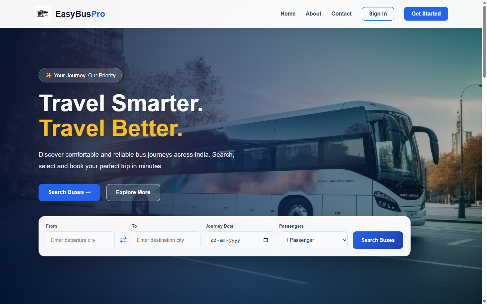
Figure 4.1: Home page of EasyBus Pro
Explanation: The navigation bar shows Sign In/Get Started when logged out and switches to a welcome message with My Bookings, Profile and Logout once logged in (Section 4.5.16). The statistics and popular-route figures are static content written into the template rather than values read from the database.
Purpose & workflow: Verifies a returning user's credentials and establishes the session
that represents that user for the rest of the visit. /signin renders the form on GET; on POST
it reads the e-mail and password, executes a parameterised SELECT against users, and if a row
is returned, stores the user's id, name and e-mail in the session before redirecting to the
dashboard.
Inputs: e-mail, password (POST).
Outputs: a populated session and redirect to /dashboard, or an error message.
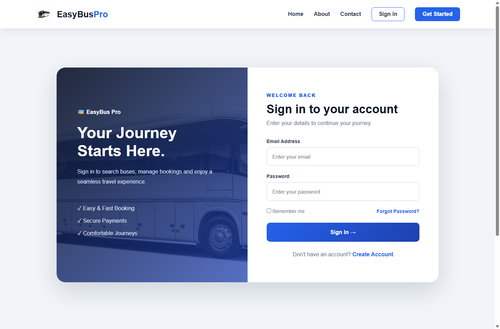
Figure 4.2: User login page
if user:
session["user_id"] = user[0]
session["user_name"] = user[1]
session["user_email"] = user[2]
return redirect('/dashboard')
Explanation: These three lines are the mechanism that lets every later page recognise the user. Because the cookie is signed, editing it to change user_id simply invalidates the session rather than granting access to another account — verified using the browser's developer tools. The password is compared in plain text because it is stored in plain text; this is the most significant weakness of the present version and is addressed in Section 4.12.
Purpose & workflow: Creates a new account. /signup renders the form on GET; on
POST it compares the two password fields and rejects the request if they differ, then attempts an
INSERT into users inside a try block, catching sqlite3.IntegrityError if the
e-mail already exists (enforced by a UNIQUE constraint) rather than performing a separate check
first.
Inputs: name, e-mail, phone, password, confirm password (POST).
Outputs: a new row in users and redirect to /signin, or an error message.
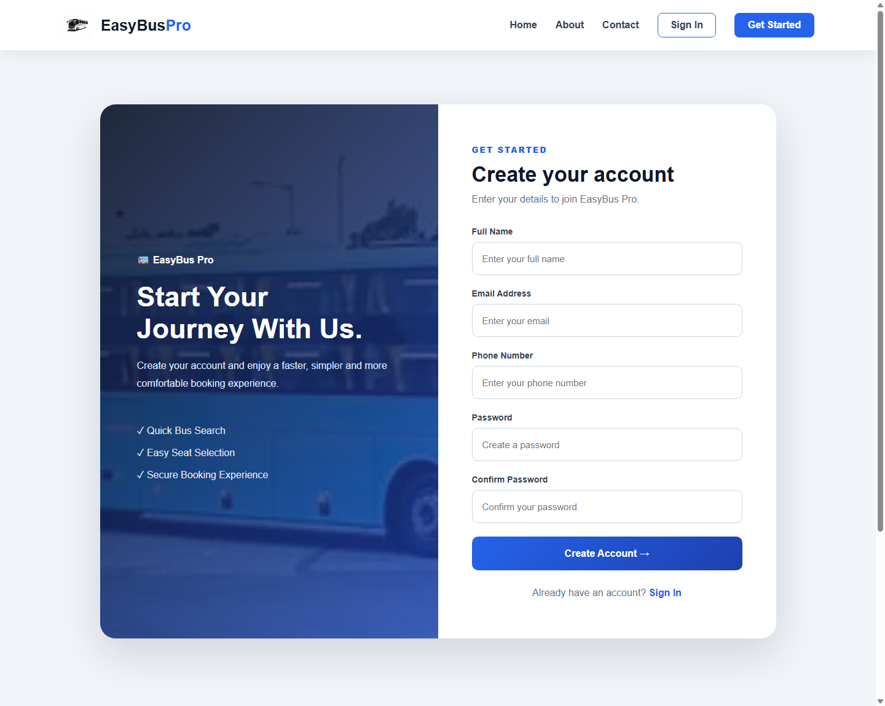
Figure 4.3: User registration page
Explanation: Letting the database enforce uniqueness, instead of a SELECT-then-INSERT sequence, was a code-review suggestion that removes a possible race condition. This path was tested by registering the same e-mail twice; the result is test case UT-04 (Section 4.11).
Purpose & workflow: A personal landing page reached after login, from which the common
actions are started. /dashboard renders dashboard.html; the greeting is produced by the
base template from the session, so this route does not query the database.
Inputs: none directly (session supplies the name).
Outputs: summary cards, quick-action links and an upcoming-journey panel.
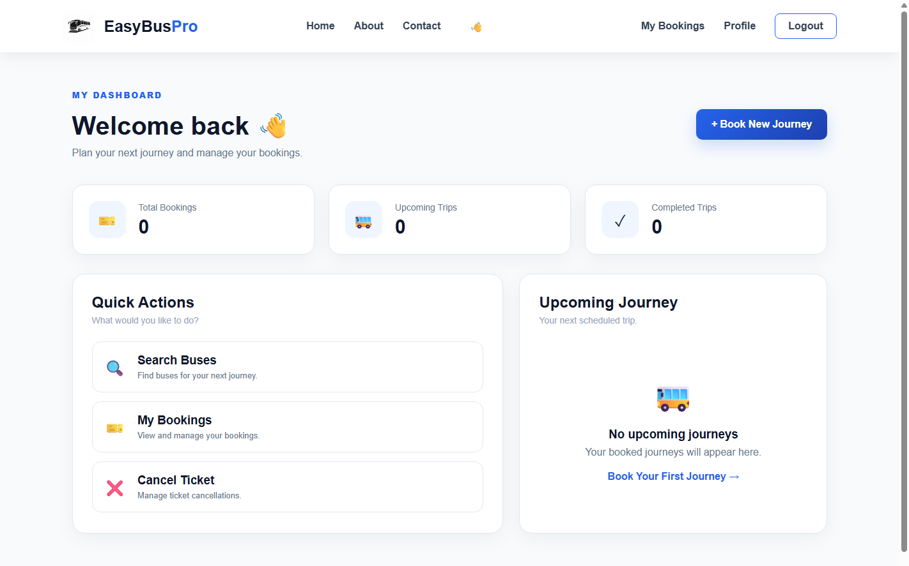
Figure 4.4: User dashboard after successful login
Explanation: The three summary cards and the Upcoming Journey panel show placeholder values rather than figures calculated from the bookings table, since priority went to completing the booking cycle before the internship ended. Making them live — a SELECT COUNT(*) filtered by user_id, and a date comparison for upcoming versus completed — is listed first among the corrections in Section 4.12.
Purpose & workflow: Collects journey details for a fresh search. /search renders
a GET-method form whose action is /results, so the four values are appended to the URL as a
query string. No database access occurs here.
Inputs: source, destination, date, passengers.
Outputs: a GET request to /results carrying these four values.
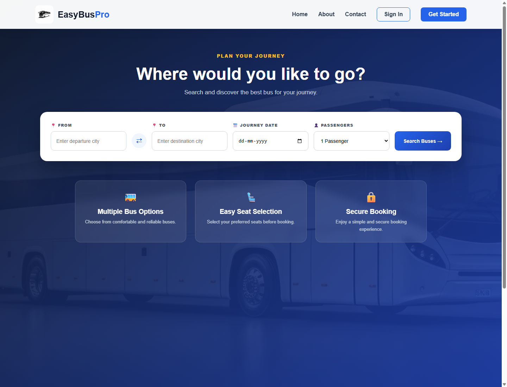
Figure 4.5: Bus search page
Explanation: GET, not POST, is used because the search does not modify server state, the result can be bookmarked, and pressing the back button after viewing results does not trigger a resubmission warning. The same reasoning does not apply to login or registration, whose POST forms keep a password out of the URL and the browser history.
Purpose & workflow: Queries the buses matching the requested route. /results
reads the four query parameters, sets conn.row_factory = sqlite3.Row, executes a SELECT
filtered by source and destination, and renders the matches with the original search values (needed
by the next page).
Inputs: query-string from, to, date, passengers.
Outputs: a list of bus cards, or a “no buses found” message.
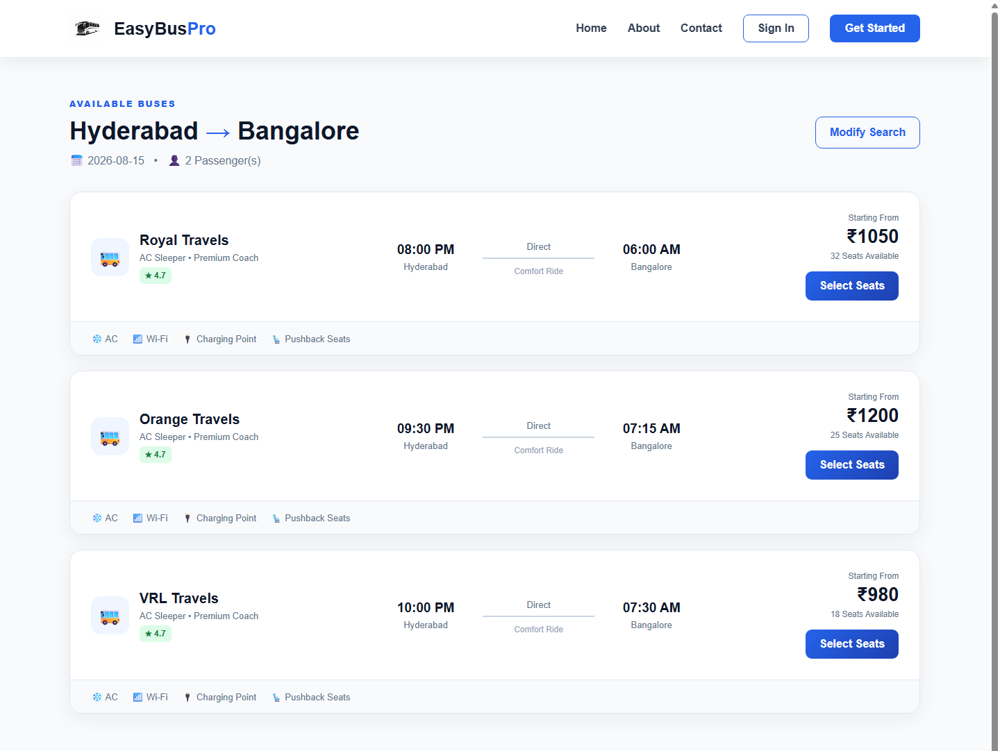
Figure 4.6: Search results showing available buses
Explanation: Handling the empty case was added after a review in which the mentor searched a route absent from the database and was shown a blank page — indistinguishable from a broken site. The Select Seats link on each card carries the bus name, route, date, passenger count and fare forward using url_for(), which is where the reserved-keyword difficulty with the parameter from arose (Section 4.10, Challenge 4). The query filters on city names only; the date entered is stored with the eventual booking but does not itself restrict which buses are shown, since the bus table represents a daily schedule rather than dated departures (Section 4.12).
Purpose & workflow: Presents a visual coach layout and restricts selection to the
requested passenger count. /seat_selection only forwards the values received from the results
page to the template; all interactivity is client-side JavaScript, which toggles a seat's selected
state, refuses a selection beyond the passenger count, and recalculates the running total.
Inputs: bus, from, to, date, passengers, price (query string).
Outputs: a GET request to /payment carrying the selected seats and total.
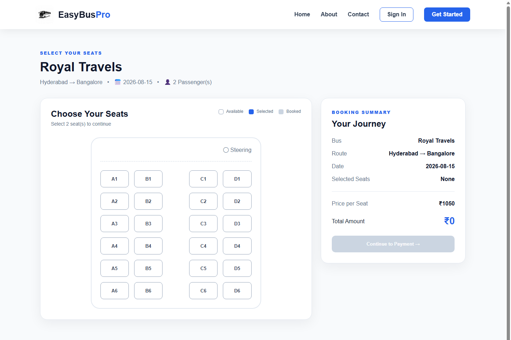
Figure 4.7: Seat selection screen with bus layout
Explanation: The seats are laid out as a 24-seat, four-column grid (A–D, rows 1–6) using CSS Grid with a central gap representing the aisle. The Continue to Payment button stays disabled until the number of seats selected exactly equals the passenger count, which is enforced in the click handler shown below.
if (selectedSeats.length >= maxSeats) {
alert("You can select only " + maxSeats + " seat(s).");
return;
}
selectedSeats.push(seatNumber);
continueBtn.disabled = selectedSeats.length !== maxSeats;
Purpose & workflow: Offers a choice of payment method and shows a journey summary
before the booking is confirmed. /payment forwards the received values into the template,
which presents UPI, card and net-banking options as required radio buttons in a form whose action is
/success.
Inputs: bus, from, to, date, passengers, seats, total (query string).
Outputs: a GET request to /success including the chosen payment method.
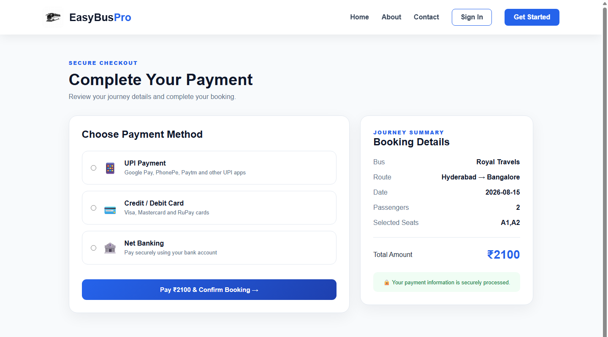
Figure 4.8: Payment method selection page
Explanation: No real payment gateway is contacted; the page simulates the choice, which was agreed with the mentor as outside the scope of an academic project (Section 1.3). The required attribute on the radio group ensures a method must be chosen before the form can be submitted.
Purpose & workflow: Finalises the booking and writes it to the database.
/success first checks "user_id" not in session and redirects to login if the user is
not authenticated, then looks up the bus id from its name, inserts a row into bookings with the
user id, bus id, date, seats, passenger count, amount and payment method, commits the transaction and
renders an electronic ticket.
Inputs: all journey and payment values (query string); session user id.
Outputs: a new row in bookings and a rendered ticket.
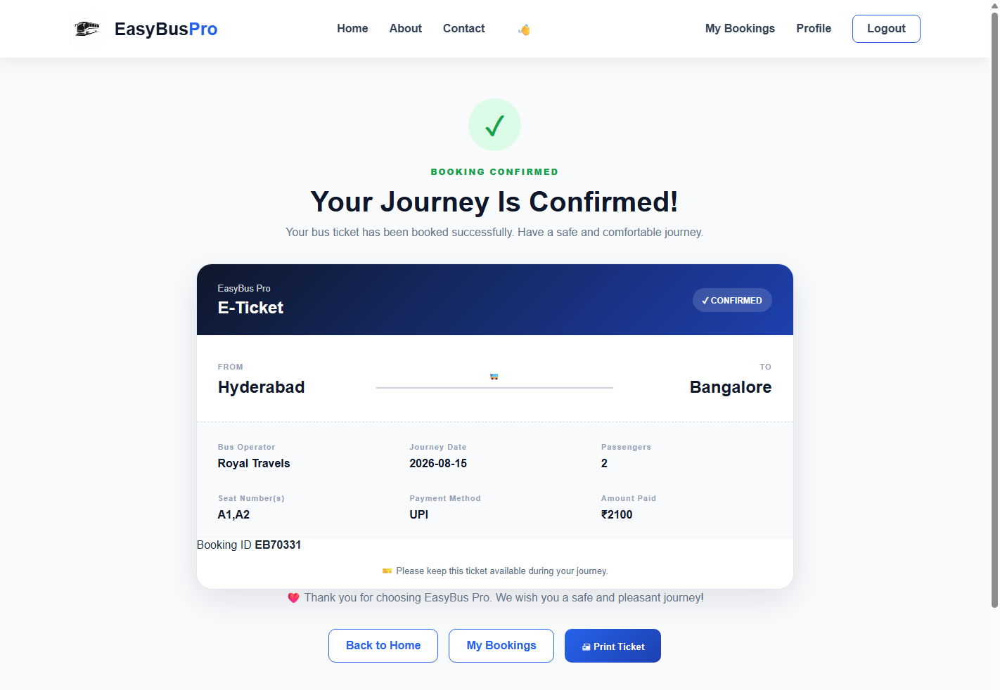
Figure 4.9: Booking confirmation page with e-ticket
Explanation: This is the one page in the application that both reads and writes the database in the same request, and the session check placed at the top of the function is what prevents an unauthenticated visitor from reaching a URL that would otherwise insert a booking with no associated user. The booking identifier shown on the ticket in the present version is generated as a random number for display rather than read back from the row just inserted — a cosmetic shortcut that is corrected in the recommendation given in Section 4.12.
Purpose & workflow: Displays the complete booking history of the logged-in user.
/my_bookings checks the session, then executes a SELECT that joins bookings with
bus on bookings.bus_id = bus.id, filtered by user_id and ordered by
booking_time descending.
Inputs: session user id.
Outputs: a list of past bookings with route, date, seats, amount and payment method, or an
empty-state message.
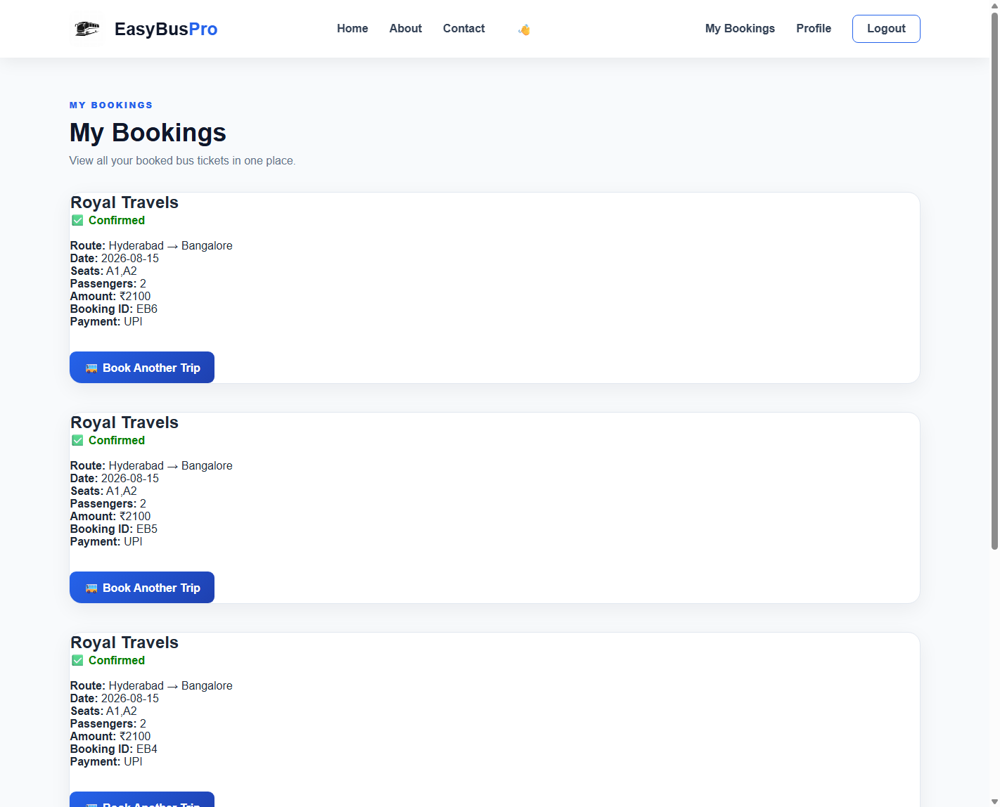
Figure 4.10: My Bookings page listing past tickets
Explanation: This module is the clearest demonstration of why the bookings table stores a bus_id foreign key rather than repeating the bus name as text: the JOIN reconstructs the full journey detail from two small tables instead of duplicating that data into every booking row. The screenshot above happens to show three separate bookings for the same Royal Travels journey — these were created while reproducing the refresh-duplication defect described as Challenge 5 in Section 4.10 and test case IT-03 in Section 4.11, and are left visible here as genuine evidence of that behaviour rather than tidied away.
Purpose & workflow: Displays the logged-in user's account details. /profile
checks the session, then selects the matching row from users by id.
Inputs: session user id.
Outputs: name, e-mail and phone number.
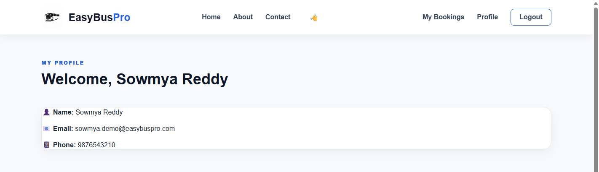
Figure 4.11: User profile page
Explanation: The page is read-only in the present version; an editable profile with an UPDATE query is listed under Future Enhancements.
Purpose & workflow: Static informational pages reachable from the navigation bar on
every screen, rendered directly without any database access.
Inputs: none. Outputs: the rendered page.
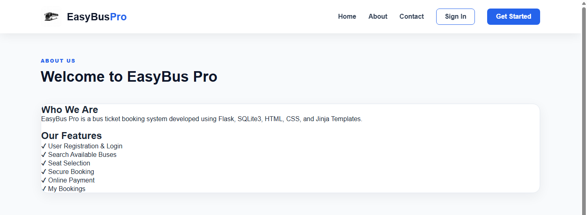
Figure 4.12: About page
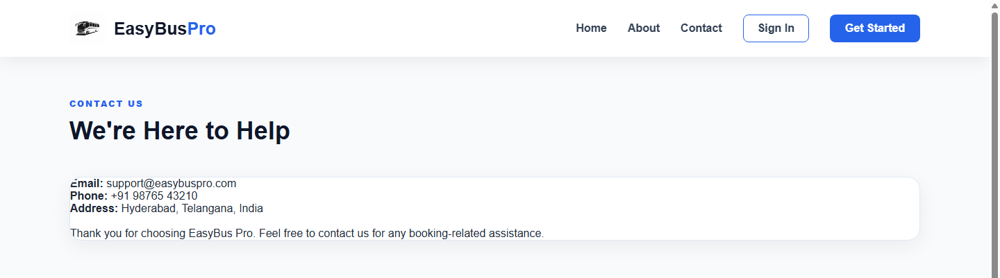
Figure 4.13: Contact page
Explanation: Both pages inherit the same base template as every other page, so they carry the identical navigation bar and footer without any additional code.
Logout (/logout) calls session.clear() and redirects to the home page, removing the user id, name and e-mail from the session in one call.
Bus Administration (/admin, /admin_dashboard) lets an administrator insert a new bus record through a form (bus name, cities, timings, price, seats) and lists every bus currently stored. It was built so that new routes could be added for testing without editing the database file directly, and carries no access restriction in the present version — a limitation noted in Section 4.12.
The navigation bar and footer, defined once in base.html, read the session to decide whether to show Sign In/Get Started or the welcome message with My Bookings, Profile and Logout. The footer repeats this structure on every page through template inheritance (Section 3.3), and is the reason a single edit is enough to change a link across all thirteen templates at once.
EasyBus Pro follows a three-tier architecture, separating what the user sees, what processes the request, and what stores the data. The three tiers communicate in one direction only — the browser never accesses the database directly, and every database operation is mediated by a Flask route.
+-----------------------------------------------------------------------------+
| PRESENTATION TIER (Client) |
| Browser -> HTML5 / CSS3 pages rendered from Jinja2 templates |
| (landing, signin, signup, dashboard, search, results, |
| seat_selection, payment, success, my_bookings, profile, |
| about, contact) + client-side JavaScript (seat selection) |
+-------------------------------------+-----------------------------------------+
| HTTP request (GET / POST)
v
+-----------------------------------------------------------------------------+
| APPLICATION TIER (Flask - app.py) |
| Routing -> View functions -> Session management -> Template render |
| 15 routes: /, /signin, /signup, /dashboard, /search, /results, |
| /seat_selection, /payment, /success, /my_bookings, /profile, /about, |
| /contact, /logout, /admin, /admin_dashboard |
+-------------------------------------+-----------------------------------------+
| sqlite3 module (parameterised SQL)
v
+-----------------------------------------------------------------------------+
| DATA TIER (SQLite3 - database.db) |
| users bus bookings |
| (id, name, email, (id, bus_name, (booking_id, user_id, bus_id, |
| phone, password) from_city, journey_date, seat_numbers, |
| to_city, passengers, amount, |
| departure, payment_method, booking_time) |
| arrival, |
| price, |
| available_seats) |
+-----------------------------------------------------------------------------+
Figure 4.14: Three-tier system architecture of EasyBus Pro
The presentation tier has no knowledge of the database; it only receives values that the application tier has already fetched and formatted. The application tier is the only layer permitted to open a database connection, and every route follows the same pattern — connect, execute a parameterised query, fetch, close — described in Section 3.4. The data tier is a single portable file, which is why the application could be copied and demonstrated on different laptops without any database server installation.
Table 4.6 lists the complete route map of the application, summarising the fifteen routes defined in app.py and the method(s) each accepts.
Table 4.6: Complete route map of the application
| Route | Method(s) | Purpose |
|---|---|---|
| / | GET | Home / landing page |
| /signin | GET, POST | Login form and authentication |
| /signup | GET, POST | Registration form and account creation |
| /dashboard | GET | Post-login landing page |
| /search | GET | Journey search form |
| /results | GET | Matching buses for a route |
| /seat_selection | GET | Visual seat layout |
| /payment | GET | Payment method selection |
| /success | GET | Booking confirmation and e-ticket |
| /my_bookings | GET | Booking history (JOIN query) |
| /profile | GET | Account details of the logged-in user |
| /about | GET | Static informational page |
| /contact | GET | Static informational page |
| /logout | GET | Clear session and redirect home |
| /admin, /admin_dashboard | GET, POST | Add and list bus records |
The database was designed before any route was written, because almost every other decision depends on it. Three entities were identified from the requirement: a person who books (users), a service being booked (bus), and the transaction connecting the two (bookings). The bookings table holds two foreign keys, user_id and bus_id, giving each booking a traceable owner and a traceable service.
+-------------------+ +----------------------+ +---------------------+
| USERS | | BOOKINGS | | BUS |
+-------------------+ +----------------------+ +---------------------+
| PK id |<---------o | FK user_id | | PK id |
| name | 1 N | PK booking_id | N 1 | bus_name |
| email (UNIQUE) | | FK bus_id |o--------->| from_city |
| phone | | journey_date | | to_city |
| password | | seat_numbers | | departure |
+-------------------+ | passengers | | arrival |
| amount | | price |
| payment_method | | available_seats |
| booking_time | +---------------------+
+----------------------+
One user places many bookings. Many bookings can reference one bus.
Figure 4.15: Entity–Relationship diagram of the database
Table 4.7: Structure of the users table
| Column | Type | Constraint | Description |
|---|---|---|---|
| id | INTEGER | PRIMARY KEY, AUTOINCREMENT | Unique identifier for each user |
| name | TEXT | NOT NULL | Full name of the user |
| TEXT | UNIQUE, NOT NULL | Login identifier; duplicates rejected by the database itself | |
| phone | TEXT | — | Contact number |
| password | TEXT | NOT NULL | Stored in plain text in the present version (Section 4.12) |
Table 4.8: Structure of the bus table
| Column | Type | Description |
|---|---|---|
| id | INTEGER PK | Unique identifier for each bus record, auto-incremented |
| bus_name | TEXT | Operator / bus name, e.g. “Royal Travels” |
| from_city | TEXT | Source city |
| to_city | TEXT | Destination city |
| departure | TEXT | Departure time |
| arrival | TEXT | Arrival time |
| price | INTEGER | Fare per seat, in rupees |
| available_seats | INTEGER | Seats available on the route |
Table 4.9: Structure of the bookings table
| Column | Type | Description |
|---|---|---|
| booking_id | INTEGER PK | Unique identifier for each booking, auto-incremented |
| user_id | INTEGER (FK → users.id) | References the user who made the booking |
| bus_id | INTEGER (FK → bus.id) | References the bus booked |
| journey_date | TEXT | Date of travel entered during search |
| seat_numbers | TEXT | Comma-separated seat codes, e.g. “A1,A2” |
| passengers | INTEGER | Number of passengers on this booking |
| amount | INTEGER | Total amount paid |
| payment_method | TEXT | UPI / Card / Net Banking |
| booking_time | TIMESTAMP | Defaults to CURRENT_TIMESTAMP; used to order history |
Table 4.10: Relationships between the database tables
| Relationship | Cardinality | Enforced by |
|---|---|---|
| users → bookings | One user can have many bookings (1:N) | bookings.user_id references users.id |
| bus → bookings | One bus can appear in many bookings (1:N) | bookings.bus_id references bus.id |
It should be stated candidly that the foreign key relationships are logical rather than enforced in the present schema: PRAGMA foreign_keys is not switched on, so SQLite does not reject a booking referencing a non-existent user or bus. The relationship is honoured correctly by every route in the application, since user_id is always taken from a verified session and bus_id is always looked up before insertion, but enabling the pragma explicitly would make the guarantee database-level rather than merely application-level, and is listed as a corrective item in Section 4.12.
The schema is created by database.py, executed once before the application is run for the first time, using CREATE TABLE IF NOT EXISTS so that re-running it is harmless.
CREATE TABLE IF NOT EXISTS users (
id INTEGER PRIMARY KEY AUTOINCREMENT,
name TEXT NOT NULL,
email TEXT UNIQUE NOT NULL,
phone TEXT,
password TEXT NOT NULL
);
CREATE TABLE IF NOT EXISTS bus (
id INTEGER PRIMARY KEY AUTOINCREMENT,
bus_name TEXT NOT NULL,
from_city TEXT NOT NULL,
to_city TEXT NOT NULL,
departure TEXT,
arrival TEXT,
price INTEGER,
available_seats INTEGER
);
CREATE TABLE IF NOT EXISTS bookings (
booking_id INTEGER PRIMARY KEY AUTOINCREMENT,
user_id INTEGER,
bus_id INTEGER,
journey_date TEXT,
seat_numbers TEXT,
passengers INTEGER,
amount INTEGER,
payment_method TEXT,
booking_time TIMESTAMP DEFAULT CURRENT_TIMESTAMP
);
Table 4.11: Sample records inserted into the bus table
| bus_name | from_city | to_city | departure | arrival | price | available_seats |
|---|---|---|---|---|---|---|
| Royal Travels | Hyderabad | Bangalore | 08:00 PM | 06:00 AM | 1050 | 32 |
| Orange Travels | Hyderabad | Bangalore | 09:30 PM | 07:15 AM | 1200 | 25 |
| VRL Travels | Hyderabad | Bangalore | 10:00 PM | 07:30 AM | 980 | 18 |
The complete booking journey, from the moment a visitor opens the site to the point where a ticket exists permanently in the database, follows a fixed sequence of pages. Figure 4.16 presents this sequence as a flowchart, and the accompanying description explains the decision points.
[ START ]
|
v
+-----------+
| HOME PAGE |
+-----------+
|
v
< Logged in? >--No--> [ LOGIN / SIGN UP ] --> (credentials OK?)--No--> back to LOGIN
|Yes |Yes
v v
+-----------+ +-----------+
| DASHBOARD | <--------------------------------| SESSION SET|
+-----------+
|
v
+--------------+
| SEARCH BUS | (from, to, date, passengers)
+--------------+
|
v
+----------------+
| RESULTS PAGE |----> (no match) --> message + Search Again
+----------------+
| select bus
v
+--------------------+
| SEAT SELECTION |--> (seats != passengers) --> stay on page
+--------------------+
| seats == passengers
v
+--------------+
| PAYMENT |----> (no method chosen) --> stay on page
+--------------+
| method chosen
v
+-----------------------+
| BOOKING CONFIRMATION | INSERT INTO bookings ...
+-----------------------+
|
v
+----------------+
| MY BOOKINGS |
+----------------+
|
v
[ END ]
Figure 4.16: Flowchart of the complete ticket booking process
Two decision points deserve special mention. The login check is not a single gate at the front of the site; it is repeated independently at every route that touches personal data (/dashboard is not itself protected in the present version, but /my_bookings, /profile and /success each check "user_id" not in session" and redirect to login if it is absent). The seat-count check is enforced twice — once by the client-side JavaScript disabling the Continue button, and implicitly again by the fact that the amount computed and carried forward is simply seats × price, so a mismatched count would only produce an incorrect total rather than a rejected request. This is one of the points revisited under Limitations in Section 4.12.
Six UML diagrams are presented to describe the system from complementary viewpoints: what a user can do, how one activity unfolds, how objects interact over time, what the static structure of the data looks like, how the software is componentised, and how it is deployed physically.
+-----------------------------------+
| EasyBus Pro |
(Visitor) o---------->| Register Login |
| Search Buses View Results |<----------o (Registered User)
| Select Seats Make Payment |
| Confirm Booking View My Bookings|
| View Profile Logout |
+-----------------------------------+
| Add Bus View All Buses |<----------o (Administrator)
+-----------------------------------+
Figure 4.17: Use case diagram
A Visitor can only register or log in. A Registered User gains access to search, seat selection, payment, booking confirmation, booking history, profile and logout — every use case builds on the login use case, shown by the implicit dependency of the personal pages on an existing session. An Administrator additionally has access to the bus administration use cases; in the present version this role is not separated by a permission check, which is noted as a limitation in Section 4.12.
(start) -> Search Bus -> [Buses Found?] --No--> Show "No Buses" -> (end)
|Yes
v
Select Bus -> Choose Seats -> [Seats == Passengers?]
|No -> (loop back to Choose Seats)
|Yes
v
Select Payment Method
|
v
Confirm & Insert Booking
|
v
Display E-Ticket -> (end)
Figure 4.18: Activity diagram for the booking activity
User Browser Flask (app.py) SQLite (database.db) | | | | |--search--->| | | | |--GET /results->| | | | |--SELECT * FROM bus-->| | | |<----rows returned-----| | |<--results.html--| | |--select seats/pay------------->| | | |--GET /success--->| | | | |--SELECT id FROM bus-->| | | |<----bus_id------------| | | |--INSERT INTO bookings->| | | |<----commit OK----------| | |<--success.html---| | |<--e-ticket--| | |
Figure 4.19: Sequence diagram for booking a ticket
+-------------------+ +----------------------+ +---------------------+
| User | | Booking | | Bus |
+-------------------+ +----------------------+ +---------------------+
| id : int | | booking_id : int | | id : int |
| name : str | | user_id : int (FK) | | bus_name : str |
| email : str | | bus_id : int (FK) | | from_city : str |
| phone : str | | journey_date : str | | to_city : str |
| password : str | | seat_numbers : str | | departure : str |
+-------------------+ | passengers : int | | arrival : str |
| register() | | amount : int | | price : int |
| login() | | payment_method : str | | available_seats : int|
+-------------------+ +----------------------+ +---------------------+
1 N N 1
+------------------------------+ +----------------------------+
places
Figure 4.20: Class diagram of the system entities
The class diagram mirrors the database tables closely because the application does not use an ORM layer that would otherwise introduce separate model classes; User, Booking and Bus here represent the data as it is read into Python (through sqlite3.Row) rather than as declared Python classes.
+----------------+ +--------------------+ +----------------------+
| Templates |<---| Flask App (app.py) |--->| sqlite3 module |
| (Jinja2, HTML) | | - Routing | | (DB access layer) |
+----------------+ | - Session mgmt | +----------------------+
| - View functions | |
+----------------+ +--------------------+ v
| Static assets |<---| | +----------------------+
| (CSS, JS, img) | +----------------------+ | database.db |
+----------------+ +----------------------+
Figure 4.21: Component diagram
+----------------------------------------------------------+
| Client Machine (Browser) |
| Chrome / Firefox / Edge -- renders HTML/CSS/JS |
+---------------------------+--------------------------------+
| HTTP (localhost:5000)
v
+----------------------------------------------------------+
| Development Machine (Windows) |
| Flask development server (Werkzeug) |
| Python 3.x runtime + app.py |
| SQLite3 database file: database.db |
+----------------------------------------------------------+
Figure 4.22: Deployment diagram
In the present version, client and server run on the same physical machine, since the application was developed and demonstrated using the Flask development server on 127.0.0.1. A production deployment would replace the development server with a WSGI server such as Gunicorn behind Nginx, as discussed in the Future Enhancements chapter.
This section records genuine difficulties encountered during development, in the order they occurred, rather than a generic list. Each was diagnosed by reading the actual error rather than guessing at a fix, which was the central debugging lesson of the internship.
Table 4.12: Challenges faced during development and their solutions
| # | Challenge | Cause and Solution |
|---|---|---|
| 1 | Jinja2 TemplateNotFound error | The HTML files had initially been placed directly in the project root instead of a folder named templates, which Flask requires by convention. Moving them into templates/ resolved the error immediately. |
| 2 | sqlite3.OperationalError: no such table: bookings | The booking confirmation route was tested before database.py had been re-run after the bookings table was added to the schema script, so the table simply did not exist yet in the existing database.db file. Re-running the setup script created it. |
| 3 | Duplicate seed data in the bus table | Running database.py more than once during early testing inserted the same three bus records repeatedly, since the INSERT statements were not initially guarded. Changing them to INSERT OR IGNORE made the script idempotent, so re-running it is now harmless. |
| 4 | Reserved-keyword conflict in a URL parameter named from | The results page needed a link built with url_for('seat', from=from_city, ...), but from is a reserved keyword in Python and cannot be used as a keyword argument in a Python-side call. The solution actually used was to build this particular link directly inside the Jinja2 template, where from is a valid dictionary/keyword-style argument to the template's own url_for() call, rather than constructing the URL in app.py. |
| 5 | Form resubmission on the confirmation page | Refreshing the browser on /success re-sent the same GET request and inserted a duplicate booking row, since the route performs a write on every GET. This was reproduced deliberately during testing (test case IT-03) and is documented as an open issue with a recommended fix (redirect-after-POST / a re-submission guard) in Section 4.12, rather than silently left unmentioned. |
| 6 | Session not persisting across pages | Early in development, app.secret_key had not been set, so Flask raised a RuntimeError when session[...] was first assigned. Setting a fixed secret key at the top of app.py resolved it, though a hard-coded key is itself listed as a limitation in Section 4.12. |
| 7 | Incorrect total on the seat selection page | The running total briefly showed concatenated digits, e.g. “10501050” instead of 2100 for two seats, because values read from the DOM are strings in JavaScript and were being added without conversion. Wrapping both operands with Number() fixed the arithmetic. |
| 8 | Losing a working template during an experiment | A working version of seat_selection.html was overwritten while testing an alternative layout and had to be rewritten from memory, since the project was not under version control at the time. This is the direct motivation for placing Git version control first in the Future Enhancements list. |
| 9 | Inconsistent spacing and duplicated CSS rules | As the stylesheet grew past a few hundred lines, similar rules were written more than once with slightly different values for the same visual element, causing inconsistent card spacing across pages. This was corrected by consolidating shared rules under common class names during a dedicated clean-up pass before the final demonstration. |
Beyond these specific defects, three broader debugging habits were formed during the internship. First, reading the full traceback from the bottom line upward, since the bottom line names the exact statement that failed, while the lines above only show how execution reached it. Second, changing one thing at a time and re-testing immediately, instead of editing several files together and losing track of which change fixed or broke the behaviour. Third, verifying against the actual database using DB Browser for SQLite rather than trusting the application's own output, since a page can render correctly from a stale variable even when the underlying INSERT silently failed.
Four levels of testing were carried out. Unit testing exercised individual routes with both valid and invalid input, checked in isolation. Functional testing verified that a complete page-level feature behaved as specified. Integration testing checked that data produced by one module was correctly consumed by the next — for instance, that the seat and total values computed on the seat selection page arrived unchanged at the payment page. User acceptance testing was carried out by asking classmates unfamiliar with the code to complete a booking unaided and to report anything confusing.
Table 4.13: Unit test cases and results
| ID | Test Case | Input | Expected Result | Actual Result |
|---|---|---|---|---|
| UT-01 | Registration with matching passwords | Valid name, e-mail, phone, password = confirm password | Account created, redirect to login | Pass |
| UT-02 | Registration with mismatched passwords | Password ≠ confirm password | Registration rejected with message | Pass |
| UT-03 | Login with correct credentials | Registered e-mail and correct password | Session created, redirect to dashboard | Pass |
| UT-04 | Duplicate e-mail registration | E-mail already present in users table | “Email already registered!” message | Pass |
| UT-05 | Login with incorrect password | Registered e-mail, wrong password | “Invalid Email or Password!” message | Pass |
| UT-06 | SQL injection attempt on login | Email = ' OR '1'='1 | Login rejected, no bypass | Pass |
| UT-07 | Search with no matching route | from = “Delhi”, to = “Timbuktu” | “No buses found” message displayed | Pass |
| UT-08 | Seat selection beyond passenger count | 2 passengers, 3 seats clicked | Alert shown, third seat not added | Pass |
Table 4.14: Functional and integration test cases
| ID | Test Case | Steps | Result |
|---|---|---|---|
| FT-01 | Complete booking flow | Register → login → search Hyderabad to Bangalore → select bus → select 2 seats → pay by UPI → confirm | Pass — booking row inserted, e-ticket displayed, entry visible under My Bookings |
| FT-02 | Accessing My Bookings while logged out | Clear session cookie, request /my_bookings directly | Pass — redirected to /signin |
| FT-03 | Accessing the booking confirmation route directly, logged out | Clear session, request /success with arbitrary query parameters | Pass — redirected to /signin, no booking inserted |
| IT-01 | Seat and total carried from seat selection to payment | Select seats A1, A2 at ₹1050 each | Pass — payment page shows “A1, A2” and ₹2100 |
| IT-02 | Booking record matches selections made across three pages | Compare seats, date and amount shown on the ticket with the values entered in search and seat selection | Pass — all values consistent |
| IT-03 | Browser refresh on the confirmation page | Complete a booking, then press F5 on /success | Fail — a duplicate booking row is inserted; documented as a known issue in Section 4.12 |
| IT-04 | Adding a bus through the admin page and finding it in search | Insert a new bus for Chennai–Coimbatore, then search that route | Pass — new bus appears in results immediately |
Table 4.15: User acceptance testing feedback
| Tester Task | Observation | Action Taken |
|---|---|---|
| Book a ticket without instructions | Completed successfully; found the seat legend (available/selected/booked) useful | No change required |
| Search a route with no buses | Initially confused by a blank page (before the fix) | Added the “No buses found” message and Search Again link |
| Register with an already-used e-mail | Message was clear but appeared as a plain text page rather than styled | Noted as a cosmetic improvement for a future iteration |
| Select fewer seats than passengers | Continue button correctly stayed disabled | No change required |
| Try the back button after payment | Returned to seat selection with the previous selection cleared | Noted as acceptable for the present scope; not corrected |
An honest report must state plainly what the delivered version does not yet do well, since a student project defended without acknowledging its limitations invites the examiner to find them instead. The following limitations are known and are the direct basis for the Future Enhancements chapter.
None of these points were discovered by an external reviewer after the fact; each was noted during development or during the testing described above and left unresolved consciously, given the time available, rather than overlooked. They form the basis of the Future Enhancements chapter that follows the concluding chapters of this report.
The clearest technical outcome of the internship is a working, practical understanding of how a multi-page web application actually fits together, as opposed to knowing the individual pieces in isolation. Before the internship, Python meant writing standalone scripts that took input from the keyboard; it now also means writing a view function that must cooperate with a browser, a session and a database within the space of a single request. HTML and CSS, which had previously been used for static pages built as classroom exercises, were used here to build thirteen templates that share a common layout and respond consistently across screen sizes.
Specifically, the internship gave working familiarity with: defining and distinguishing GET and POST routes; reading input through request.form and request.args; rendering dynamic pages with Jinja2, including loops, conditionals and template inheritance; writing parameterised SQL statements and understanding why string concatenation in a query is dangerous; using sqlite3.Row for column access by name; performing INSERT and SELECT operations, including a two-table JOIN; managing user identity through signed sessions; and writing enough client-side JavaScript to make one screen properly interactive without depending on a library.
Of everything learned, the change in debugging habit is the one most likely to transfer to future work regardless of the technology involved. At the start of the internship, an error message was treated as an obstacle to be removed by trial and error — changing a line, running the program again, and repeating until the error happened to disappear. By the middle of the internship this had changed to a fixed sequence: read the last line of the traceback first, since it names the exact statement and exception type; identify which value at that point could plausibly cause the failure; form one hypothesis about the cause; test that hypothesis directly, for example by printing the suspect value, rather than editing code speculatively; and only then make the correction.
The nine challenges recorded in Table 4.12 were each resolved using this sequence rather than by guesswork, and the habit of verifying a fix against the actual database contents using DB Browser for SQLite — rather than trusting that the page looked correct — caught more than one case where a query appeared to succeed but had silently written the wrong value.
The database-related learning went beyond syntax. Designing the users, bus and bookings tables before writing any route made clear why database design is usually placed before implementation in a software development process: a mistake made in the schema, such as storing seat numbers as a single text field rather than as individual rows, has consequences that surface much later, when a feature such as per-seat cancellation is attempted (Section 4.12). The practical meaning of a foreign key also became concrete only once the my_bookings query had to join bookings with bus to reconstruct a complete ticket from two small tables instead of one wide, repetitive one.
On the Flask side, the internship clarified exactly what the framework does and does not do automatically. Nothing about routing, sessions or database access happens without an explicit line of code, which made the framework demanding to learn at first but easy to reason about once the request–response cycle in Figure 3.1 was internalised. Building fifteen routes across one file also taught, by direct experience of the alternative, why larger Flask applications are usually split into blueprints once a single file grows unmanageable.
Writing the entire stylesheet by hand, without a CSS framework, was more time-consuming than using Bootstrap would have been, but it produced an understanding of the box model, Flexbox and CSS Grid that would likely not have developed otherwise. The seat selection layout in particular required working out how to represent an aisle using a grid gap, and how to reflect a client-side state change (a selected seat) purely through a CSS class rather than inline styles.
On project organization, keeping the presentation layer (templates and CSS) cleanly separated from the application layer (app.py) made it possible to change how a page looked without touching the routes that fed it data, and vice versa. The one clear organizational lesson learned the hard way was the absence of version control: losing a working template to an overwritten experiment (Challenge 8, Section 4.10) demonstrated directly why every professional codebase is kept under Git, a practice this project did not follow but should have from its first day.
Beyond the technical content, the internship required skills that a purely academic assignment does not exercise. Communication was tested every week in the review with the mentor, where a feature had to be explained, defended and sometimes admitted to be incomplete without becoming defensive about the criticism received. Time management was tested by the fixed weekly milestones in Table 1.1; the seat selection and payment screens took longer than planned, which meant the schedule for later weeks had to be adjusted honestly rather than the shortfall being hidden. Accepting and acting on feedback was perhaps the most valuable soft skill, since several of the improvements recorded in this report — the empty-search message, the duplicate-e-mail check using IntegrityError, the numeric conversion in the seat selection script — originated directly from a mentor's review comment rather than from independent discovery.
Finally, the discipline of reporting a problem honestly rather than concealing it — stating in this very report, for instance, that the dashboard statistics are not yet calculated from real data, or that a page refresh can duplicate a booking — was itself presented during the internship as a professional expectation rather than an admission of failure, and is reflected throughout Chapter 4 of this report.
This internship set out to provide practical exposure to the complete cycle of web application development — requirement analysis, database design, server-side programming, interface development, testing and documentation — through a single project rather than through isolated exercises, and that objective has been met. The outcome, EasyBus Pro, is a working bus ticket booking system built on Python, Flask and SQLite3 that takes a traveller through registration, login, search, comparison, seat selection, payment and confirmation, and preserves a permanent, retrievable record of every completed booking.
The project succeeded in exercising, in a connected way, concepts that had previously been studied as separate subjects. The request–response cycle, template inheritance, parameterised queries, session management and the relational design of the users, bus and bookings tables were not abstract topics by the end of the internship; each one had a specific line of code, a specific defect, or a specific review comment attached to it. The fifteen Flask routes, thirteen Jinja2 templates and roughly one thousand lines of hand-written CSS that make up the application were all written, tested and understood personally, which is precisely what an academic internship is meant to verify.
Equally important is what the internship revealed about the gap between a program that runs and a program that is ready to be relied upon. Several genuine shortcomings surfaced during development and testing — plain-text password storage, a dashboard whose statistics are not yet live, a booking confirmation page that can be duplicated by a browser refresh, foreign key relationships that are honoured by the application but not enforced by the database, and the absence of role-based access control on the administrative pages. Rather than conceal these, this report has stated them plainly in Section 4.12, because recognising the difference between a feature that works under normal use and one that is safe under every use is itself one of the more mature lessons of the internship.
The debugging habits formed during the internship — reading a traceback from the bottom upward, changing one thing at a time, and verifying against the actual database rather than trusting the rendered page — are not specific to Flask or to SQLite and are expected to transfer directly to any future development work, in any language or framework. Similarly, the professional habits observed and practised at the organization — the daily stand-up, the weekly code review, and the expectation that a blocked task be reported early rather than late — are habits of engineering discipline that extend well beyond this particular internship.
In summary, the internship achieved its stated objectives to a substantial extent. A complete, working application was designed, implemented, tested and documented; the technical skills targeted at the outset — Flask development, database design, session management and debugging — were genuinely acquired rather than only observed; and the professional conduct expected of a working environment was practised under real supervision. The limitations that remain in the present version of EasyBus Pro are neither hidden nor treated as failures; they are recorded as the deliberate starting point for the enhancements proposed in the following section, and they mark out clearly what a second iteration of this project would need to address first.
The following enhancements are proposed as realistic next steps, arising directly from the limitations recorded in Section 4.12 rather than as a generic wish list.
These enhancements are ordered roughly by priority: the first four address defects and risks already present in the delivered version and would be undertaken before any new feature; the remainder extend the functionality of the system in directions consistent with the organization's own stated future scope (Section 2.7).